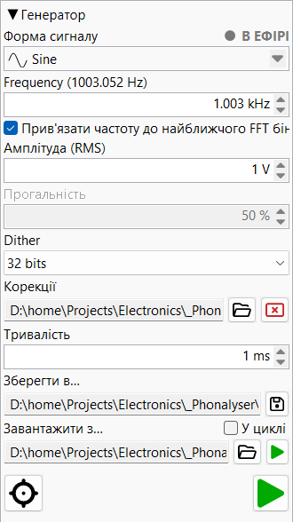

На цій сторінці описані елементи керування генератором. Про те, як він синтезує сигнали всередині — пряме цифрове синтезування, ядра форм хвилі, свіпи та активна компенсація спотворень — дивіться Теорія роботи ▸ Сигнальний генератор.
Формує тестові сигнали, що надходять на налаштований вихідний пристрій. На цій панелі співіснують два взаємовиключних двигуни: тоновий генератор (синус / свіп / шум / тощо) та програвач аудіофайлів. Запуск одного зупиняє інший.
Кожне числове поле тут приймає значення чотирма способами: введіть його вручну, прокрутіть коліщатко миші, натисніть стрілки ▲/▼ або — якщо поле у фокусі — натисніть клавіші ↑/↓ (той самий крок, що й у стрілок).

Випадаюче комбо з одинадцятьма формами хвилі. Кожен запис має маленьку
піктограму, що показує форму хвилі. Зміна форми переналаштовує навколишні
елементи керування — поле шпаруватості вмикається для Rectangle
та Triangle, елементи керування свіпом з'являються для
Linear sweep та Log sweep, поле частоти вимикається
для варіантів шуму.
| Форма | Примітки |
|---|---|
| Sine | Чистий тон, керований DDS. |
| Sine compensated | DDS-скоригований так, що фактична випромінювана частота точно збігається із запрошеним значенням. |
| Triangle | Регульована шпаруватість (асиметрична рампа). |
| Rectangle | Регульована шпаруватість (частка часу у стані «високий»). |
| White noise | Рівномірно-випадкові відліки. |
| Pink noise | Гаусівське джерело через Voss–McCartney. |
| Pink noise linear | Джерело білого шуму з рівною амплітудою через Voss–McCartney. |
| Linear sweep | Чірп із лінійною за часом частотною рампою. |
| Log sweep | Логарифмічний чірп Farina — рівна енергія на октаву. |
LED і текст ON AIR у верхньому правому куті панелі. Кожного разу, коли тоновий генератор АБО програвач аудіофайлів керує виходом, LED горить суцільним червоним і текст ON AIR блимає. Обидва стають сірими, коли нічого не відтворюється — тобто індикатор показує з першого погляду, чи програма зараз випромінює звук.
Вихідна частота для періодичних форм хвилі (вимкнена для варіантів шуму).
Приймає Hz та kHz; число без суфікса читається як Hz,
а дисплей перемикається на kHz вище 1 kHz.
Мітка може показувати анотацію у дужках — наприклад,
Frequency (1000.122 Hz) — коли корекція прив'язки до бін FFT
або цілочисельний період відліку (для Rectangle)
дає випромінювану частоту, дещо відмінну від введеної.
Значення у дужках — це фактична випромінювана частота.
Прапорець. Якщо увімкнено, випромінювана частота прив'язується до найближчого бін FFT для поточної довжини FFT-аналізатора. Корисно для чистих спектральних вимірювань: при увімкненій прив'язці основний тон потрапляє точно на бін і витік вікна не забруднює оцінки гармонік.
Активна лише для Rectangle (частка часу у стані «високий») та
Triangle (частка часу наростання) у відсотках. Кожна
форма хвилі запам'ятовує власне значення, тому перемикання між Rectangle і
Triangle відновлює останнє значення кожної.
Лише для Rectangle шпаруватість адаптується до того, що DDS
може фактично видати: його крок +1/−1 може потрапляти лише на цілий
відлік, тому найдрібніший крок шпаруватості — один відлік на період —
f / fs (вихідна частота ÷ частота дискретизації). Приклад:
10 kHz при 384 kHz дає 38.4 відліки на період, тому найменший
крок ≈ 1/38.4 ≈ 2.63 %, а більш дрібне введене значення
прив'язується до найближчого досяжного кроку. Мітка тоді показує
адаптовану шпаруватість у дужках — наприклад, Duty cycle (2.632 %).
Triangle використовує справжній безперервно-фазовий DDS (його відліки
лежать точно на рампах, тому кут є субвідліковим), тому його шпаруватість
точна — без квантування і без дужок. Дивіться
Теорія ▸ квантування шпаруватості.
Видимий лише при виборі Dual tone. До єдиного поля частоти
додаються друга частота та баланс амплітуд між двома тонами
(кожний у відсотках; типовими тестами на інтермодуляцію є пари
19 kHz + 20 kHz або 60 Hz + 7 kHz). Комбінований вихід
перенормується до введеного значення V RMS незалежно від розподілу,
тому пара 50/50 не тихіша за одиночний тон за тих самих налаштувань. Обидва
тони можна прив'язати до бін FFT
незалежно, а FFT-аналізатор вимірює їхні продукти інтермодуляції —
дивіться Теорія ▸ подвійний
тон та Теорія ▸ два тони.
Варіант Dual tone із корекцією інтермодуляції —
двотоновий аналог Sine compensated. Кожен продукт спотворення
двотонового сигналу — гармоніки кожного тону та їхні продукти
інтермодуляції — знаходиться на
a·f1 + b·f2 для цілих
a, b, тому генератор попередньо спотворює вихід
протифазним коригувальним тоном на кожному такому продукті, щоб скасувати
його на стороні аналізатора. Корекції вимірюються автоматично
за допомогою замкненого майстра предспотворення — кнопки-палочки ★
поруч із елементом запису FFT-аналізатора — та потім застосовуються в реальному
часі. Вибір цієї форми з комбо без завантажених виміряних корекцій просто
видає два чисті тони, так само як Sine compensated повертається
до чистого синусу.
Видимий лише при виборі Linear sweep або Log sweep.
Замінює єдине поле частоти блоком параметрів свіпу.

Частота, з якої починається чірп (Hz / kHz).
Частота, на якій закінчується чірп (Hz / kHz).
Загальна довжина чірпу в секундах.
Секунди. Рампа амплітуди на початку чірпу, що пригнічує клацання, яке спричинив би різкий стрибок амплітуди.
Секунди. Те саме, що й наростання, але в кінці чірпу.
Прапорець. Якщо увімкнено, свіп перезапускається одразу після завершення, у безперервному циклі.
Рівень виходу, що зберігається внутрішньо як вольти RMS. Одиниці:
µV, mV, V та dBV
(без урахування регістру); число без суфікса читається як вольти. Метричний
дисплей автоматично масштабується (µV / mV / V), щоб число залишалося читабельним;
введення значення dBV залишає поле в dBV (автомасштабування ніколи
не перемикається на dBV самостійно).
Примітка: dBV відноситься до 1 V RMS незалежно від
пристрою — x dBV = 10x/20 VRMS.
Випадаючий список лише для читання (перебудовується відповідно до бітової
глибини виходу при відкритті). Визначає, скільки LSB трикутного дизерингу
додається перед квантуванням. Off вимикає дизеринг;
1 .. N додає 1 .. N LSB (N = бітова глибина виходу).
Дизеринг руйнує періодичні патерни квантування при дуже низьких рівнях
виходу.
Необов'язковий файл предспотворення, що описує компенсацію DAC. Однотоновий
файл містить перелік комплексної корекції для кожної гармоніки; двотоновий
файл містить продукти інтермодуляції у вигляді коефіцієнтів (a, b).
Генератор попередньо спотворює вихід так, щоб перелічені спотворення
скасовувалися на стороні аналізатора. Використовуйте кнопку відкриття файлу
для вибору .dpd; поле лише для читання тоді показує завантажений
шлях, а кнопка очищення вивантажує його. Ці файли створюються
майстром предспотворення панелі FFT (кнопка-паличка ★
поруч із елементом запису) — дивіться
Подвійний тон (компенсований) та
Sine compensated.
Секунди. Довжина аудіо для запису при використанні Save to. Незалежна від живого випромінювання — файл рендериться за один прохід із поточними налаштуваннями генератора.
Поле шляху лише для читання + кнопка збереження. Клацання відкриває
діалог збереження; розширення обраного файлу визначає формат
(.wav / .flac / .aiff /
.aif). Підтвердження негайно записує файл із поточними
налаштуваннями генератора та вказаною вище тривалістю.
Записаний файл є ідеальним, математично точним сигналом — синтезованим цифровим способом і вільним від будь-яких спотворень DAC, підсилювача або кабелів. Використовуйте його як еталон або для подачі на інший прилад з відомо чистим джерелом. Дивіться Теорія ▸ збереження сигналу.
Відтворює наявний аудіофайл на вихідний пристрій. Кнопка відкриття аудіо
вибирає файл — будь-який WAV / AIFF / FLAC,
не лише файли, збережені цією програмою. Прапорець В циклі повторює
файл по досягненні кінця; перемикач живий — зміна під час відтворення набуває
чинності в наступній точці циклу.
Малий LED відтворення поруч із полем шляху. Горить під час відтворення файлу, темний в іншому випадку. Запуск відтворення файлу зупиняє тоновий генератор, якщо він був запущений (і навпаки для головної кнопки відтворення).
Велика кнопка відтворення, закріплена в нижньому правому куті панелі. Запускає тоновий генератор із поточною формою / частотою / амплітудою. Під час роботи піктограма показує активний стан відтворення і індикатор ON AIR блимає. Повторне натискання зупиняє випромінювання. Запуск головного програвача зупиняє програвач WAV-файлів, якщо він був запущений.